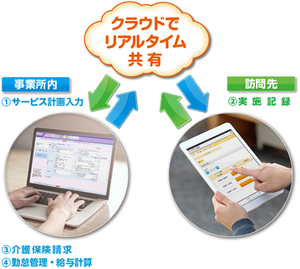
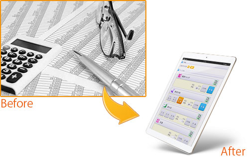
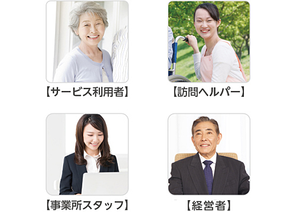
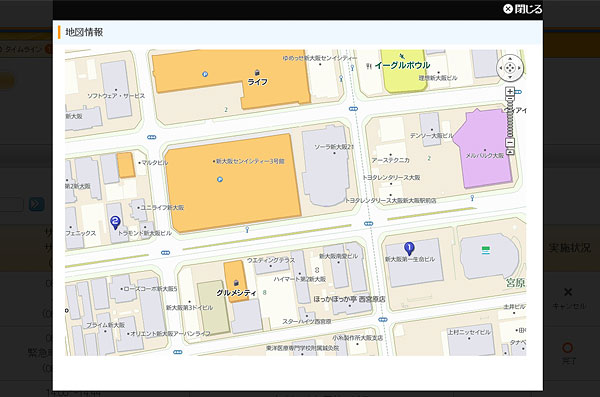
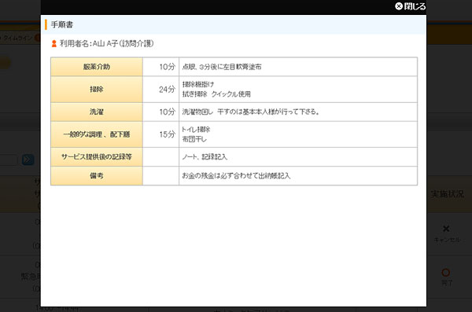
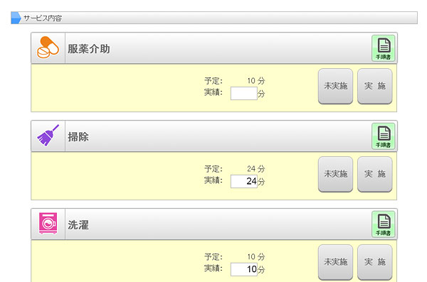

スマートフォンでもタブレットでも訪問先で簡単に記録！安心！簡単！便利！業務改善「訪問介護記録システム」カナエルタッチ ペーパーレスを実現！
タブレット・スマートフォンでラクラク記録！ペーパーレス化！
訪問介護業務のムダやお悩みを解決します
・ヘルパーが仕事の依頼や日時を間違えてしまう。
・ヘルパーの勤怠状況の把握が難しい。
・事業所スタッフは常に手書きの報告書を再入力している。
・サービス実施や勤怠時間の入力ミスが起きてしまう。
訪問介護事業を行う上で訪問先と事業所内の連絡業務や書類の入力ミスなどの問題を抱えていらっしゃる事業所は多いのではないでしょうか。このような問題をクラウドサービスとタブレット端末によって解決できるシステムを紹介いたします。
カナミックネットワークが提供する「カナエルタッチ」です。
操作はカンタン！でも機能は満載！
訪問介護記録機能カナエルタッチとは
訪問介護事業所の声を取り入れ共同開発
「カナエルタッチ」は訪問介護事業を運営に関わるロングライフホールディング株式会社と介護・医療分野クラウドサービスの株式会社カナミックネットワークが共同開発したシステムです。人件費、事務員の残業削減、ペーパーレス化による紙コスト削減、書類保管スペース料金などの経費削減や、業務改善を図ることで人材不足改善と介護職が利用者に向かい合う時間を増やすことなどが見込まれています。
訪問ヘルパーと事業所スタッフをつなぎ、シームレスな業務進行が可能です

「カナエルタッチ」の機能は訪問介護業務の記録と連絡の手間を改善します。
ペーパーレスによる多くのメリットが期待出来ます

- 1） 経費削減
-
紙媒体と比べ、保管コストや用紙代・インク代が節約出来ます。
また書類の保管スペースが不要になるため、省スペース化にも繋がります。 - 2） 業務の効率化
- これまで書類の管理にかかっていた時間や人材を、他の業務に割り当てることが出来ます。
- 3） 紛失防止
- 書類がばらばらになってしまったり、保管場所がわからない等の心配がなくなります。
- 4） エコロジー
- 紙を使わず無駄なごみも出ないため、資源の節約になります。
経営者、事業所スタッフ、ヘルパー、利用者みなさまの希望を叶える介護ソフト

利用者にとってはヘルパーのサービスが向上、訪問ヘルパーにとっては報告やサービスのミスが減り安心、事業所スタッフにとっては再入力の手間が減少、経営者にとっては紙コストなど経費削減と、「カナエルタッチ」の導入によってみなさまにそれぞれのメリットが生まれます。
介護は１人では成り立たないもの。サービス利用者によりよいケアを提供するために、この機会に現在の業務を見直してみませんか？
タブレット、スマートフォンに最適な表示でカンタンに入力可能
■訪問先を地図内でルート表示
■サービス内容、手順書表示
■押すだけでカンタン記録
さらに！カナミックの業務ソフトは各種介護サービスに対応！
カナミックネットワーク業務システムでできる範囲
「カナエルタッチ」に連動しているカナミックネットワークの介護業務ソフトは、訪問介護サービスだけでなく各種介護サービスにフルラインアップ対応しております。
ケアプランを作成するケアマネジャーとの連携や、営業活動支援機能、債権管理機能、経営・統計分析ツールなども利用可能です。（※一部オプション）
医療・介護連携システムも含め、今後の介護事業経営に必須の高機能・多機能なシステムになっています。
介護ソフト システムラインアップ


お問合せから導入、アフターフォローまでの流れ

1弊社にお問合せ
まずはお電話か、本サイト内の入力フォームからお問合せください。

2営業担当からご連絡
弊社の営業担当者から、ご連絡させて頂きます。

3ヒアリング、詳細のご案内
介護業界に特化し、多数のソリューション実績を持っている専門の営業マンが、お客様の事業所にお伺いして介護システム及び介護ソフトに関するヒアリング及びご説明をさせて頂きます。 現状の問題点や解決したいポイントを明確にし、介護ソフトによるソリューションをご提案させて頂きます。お気軽にご相談ください。

4ご契約
システムの利用申し込みをして頂きます。

5導入に向けてお客様とご相談
既存システムからのデータ移行や操作教育など、 介護ソフト導入に向けて詳しくスケジュールを立てさせて頂きます。

6ご訪問による操作説明
介護ソフト・システム導入支援専門の部署の社員が訪問させていただき説明を行います。
1度目の訪問でシステム操作説明を、2度目の訪問で請求に関する説明を行います。

7システム運用開始
全てのステップで専門のスタッフが担当させて頂きますので、 安心してシステム導入を出来ます。

8電話サポート
導入後もシステムに精通したカナミックネットワークのスタッフが電話でサポートいたします。
ＰＣ操作に不安のある方も安心です。

9研修会
カナミックネットワークでは月に１度ご希望のユーザー様に向けて社内でシステム研修会を開催しております。
資料を見ながら操作方法などの説明を行い、その場でお客様のご質問にお答えいたします。